Gandhi's first major active involvement in India, supporting oppressed indigo farmers in Bihar. Kheda satyagraha organized to demand revenue tax remission for peasants facing crop failure in Gujarat.
→ The Champaran Satyagraha of 1917 and the Kheda Satyagraha of 1918 were Mahatma Gandhi's earliest successful experiments with non-violent civil disobedience in India.
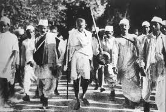
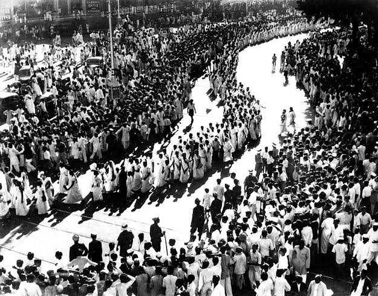
A localized action where Gandhi used a fast unto death to secure fair wage hikes for textile mill workers. The Ahmedabad Mill Strike of February–March 1918 was a landmark industrial dispute where Mahatma Gandhi used a hunger strike for the first time in India.
→ Plague Bonus Dispute: During the 1917 plague epidemic, mill owners gave workers a high "plague bonus" (up to 70–80%) to keep them in the city.
→ Withdrawal of Bonus: As the epidemic subsided, owners tried to remove the bonus despite severe wartime inflation.
→ Demands: Workers wanted a 35% wage increase to match living costs, while owners offered only 20%.
→ Gandhi's Fast: When workers began losing morale and threatened to break their pledge, Gandhi undertook his first hunger strike to inspire resolve.
→ The dispute went to an impartial tribunal, which granted the workers their full 35% wage increase.
→ Long-Term Impact: The success led to the creation of the Ahmedabad Textile Labour Association (TLA) in 1920, setting a precedent for peaceful, organized labor movements in India.
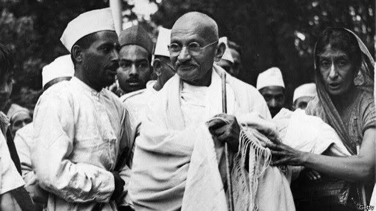
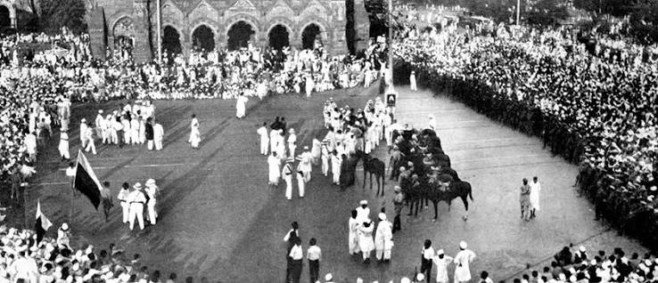
A large-scale campaign urging Indians to boycott British educational institutions, courts, and goods to paralyze colonial administration. The Non-Cooperation Movement was a nationwide mass protest launched by Mahatma Gandhi on August 1, 1920, to resist British rule through peaceful and non-violent non-cooperation.
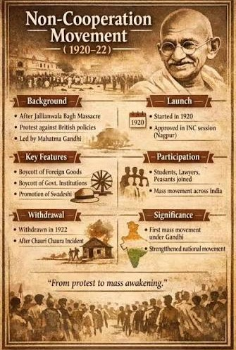
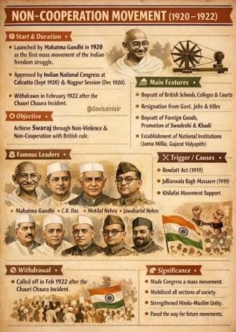
→ Rowlatt Act (1919): Suspended the rights of political prisoners in sedition trials, outraging Indian leaders.
→ British troops brutally killed hundreds of unarmed peaceful demonstrators in Amritsar.
→ Addressed Muslim grievances regarding the treatment of the Ottoman Caliph after World War I, unifying communities.
→ Achieve Swaraj: To persuade the British government to grant self-governance to India.
→ Surrendering British titles, boycotting government schools, courts, foreign goods, and legislative councils.
→ Encouraging hand-spun Khadi and native institutions for economic self-reliance.
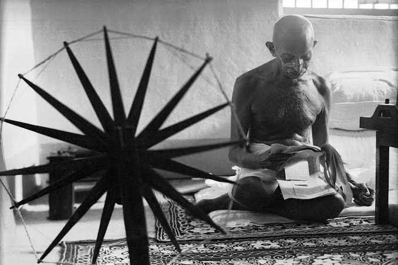
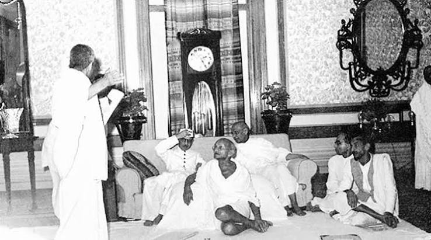
A historic march to Dandi protesting the unjust British salt tax, sparking nationwide defiance. The Salt March of 1930 was a 24-day nonviolent protest led by Mahatma Gandhi that directly sparked the nationwide Civil Disobedience Movement against British colonial rule in India.
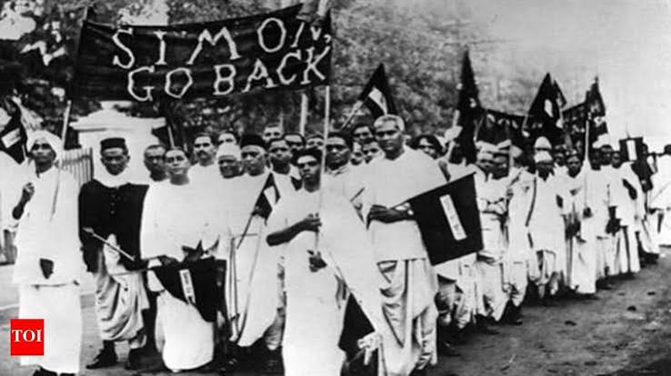
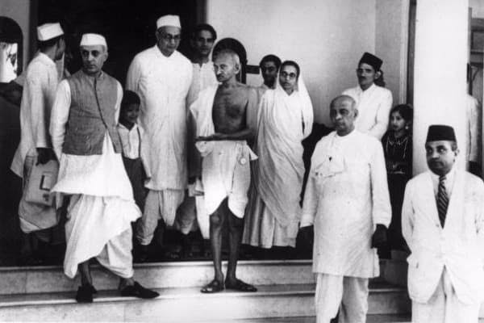
"Do or Die" demand for an immediate end to British rule, mobilizing millions across the country. The Quit India Movement was a political campaign launched at the Bombay session of the All India Congress Committee by Mahatma Gandhi on 8 August 1942, during World War II, demanding an end to British rule in India. After Britain failed to secure Indian support for the British war effort with the Cripps Mission, Gandhi made a call to Do or Die in his Quit India speech[5] delivered in Bombay on 8 August 1942 at the Gowalia Tank Maidan. Viceroy Linlithgow described the movement as "by far the most serious rebellion since 1857".
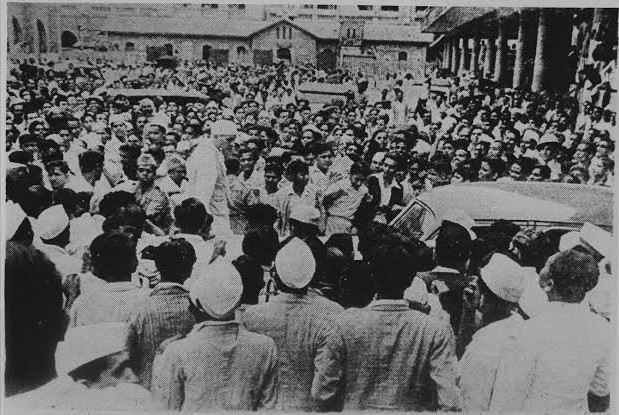
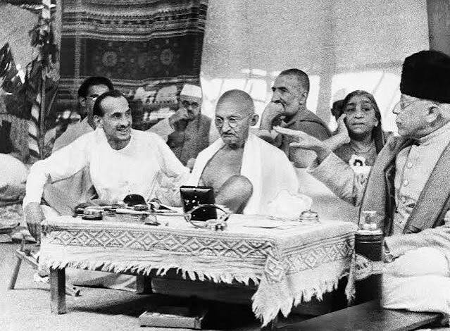
Gandhi Jayanti is observed annually in India as his birth anniversary.
Mahatma Gandhi was born on 2 October in Porbandar, Gujarat.
Gandhi went to South Africa, where his experiences shaped his approach to social and political activism.
Gandhi returned to India and became increasingly involved in India's freedom movement.
India achieved independence after a long freedom struggle.